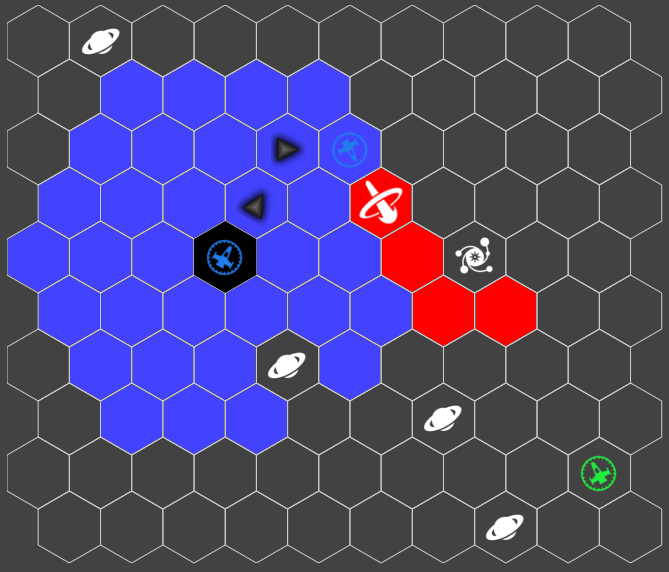
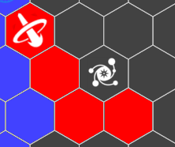
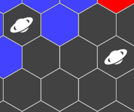

Players are the commanders of a spaceship team, which have to move onto space and fight each other.
In specific, the first game prototype will aim at the dual mode (1 Player vs 1 Player) in order to demonstrate how the game should function in the end.
The whole game will be going in round contains of two phases ( Planning and Execution ).
Planning phase like other turn-based strategy game, players take turns to plan out their next move(s) for their entire spaceship.
However, the difference between Simultaneous and Turn-based strategy game is that players do NOT know what their opponent’s next move is.
In other word, players have to anticipate their opponent's next move and take advantages of the anticipation in order to win the game.
If you cannot understand at this point, dont worry, just follow alone to execution phase.
Then, after all players finish their planning phase , the game will move to what is called Execution Phase , which will carry out all players’ moves and execute all of them simultaneously.
By doing this, the player's anticipation will be carrying out and played. If player's guess is correct, they can, for example, move theirs ship to a save position and attack enemy without enemy's backfire (may due to enemy's ship is not facing).
Therefore, anticipation is the key for player to win the game. However, the anticipation is not coming out of nowhere like pure guess. Player needs to use the field information, such as obstacles, in order to know where enemy can move. Or in advance, player can even use the obstacles to move out of danger zone!
In short, players will be using all the information not just from their ship but also from the environment(at this case, space obstacles like black hole, asteroid field) in order to achieve the victory.
Besides all the overview, the game will be using hexagon grid map as the below to play.
The graphes below are example graph to show what our current ideas are

Assume player control one blue ship, as indicated as blue on the image, and it has the movement range indicated as blue tiles
Meanwhile, enemy ship is indicated as green ship
Player can choose to move and attack facing desired direction as graph above!
Attack may be effected by the blackhole (pulling attack and in advance it curves the attack)
Obstacles will also limit the move range!